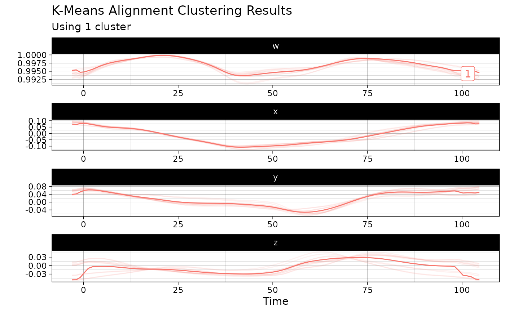

This function creates a visualization of the results of the k-means alignment algorithm applied on a sample of QTS and returns the corresponding ggplot2::ggplot object which enable further customization of the plot.
Arguments
- object
An object of class
kma_qtsas produced by thekmeans.qts_sample()method.- ...
Further arguments to be passed to other methods.
Value
A ggplot2::ggplot object.
Examples
res_kma <- kmeans(vespa64$igp[1:10], k = 2, nstart = 1)
#> ℹ Computing initial centroids using kmeans++ strategy...
#> Information about the data set:
#> - Number of observations: 10
#> - Number of dimensions: 3
#> - Number of points: 101
#>
#> Information about cluster initialization:
#> - Number of clusters: 1
#> - Initial seeds for cluster centers: 5
#>
#> Information about the methods used within the algorithm:
#> - Warping method: affine
#> - Center method: mean
#> - Dissimilarity method: l2
#> - Optimization method: bobyqa
#>
#> Information about warping parameter bounds:
#> - Warping options: 0.1500 0.1500
#>
#> Information about convergence criteria:
#> - Maximum number of iterations: 100
#> - Distance relative tolerance: 0.001
#>
#> Information about parallelization setup:
#> - Number of threads: 1
#> - Parallel method: 0
#>
#> Other information:
#> - Use fence to robustify: 0
#> - Check total dissimilarity: 1
#> - Compute overall center: 0
#>
#> Running k-centroid algorithm:
#> - Iteration #1
#> * Size of cluster #0: 10
#> - Iteration #2
#> * Size of cluster #0: 10
#> - Iteration #3
#> * Size of cluster #0: 10
#> - Iteration #4
#> * Size of cluster #0: 10
#>
#> Active stopping criteria:
#> - The total dissimilarity did not decrease.
ggplot2::autoplot(res_kma)
